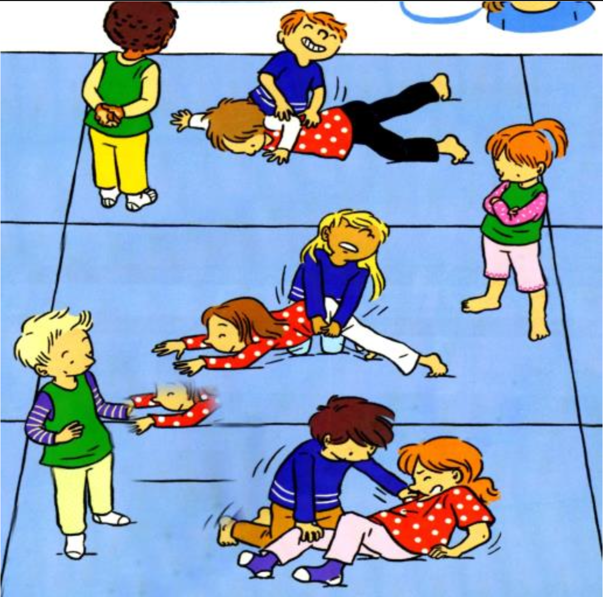

Objectif d'apprentissage
Représenter et coder les gains de chaque équipe pour les comparer.
But
Le jardinier doit retourner la tortue pour récupérer la salade volée. Chaque tortue doit résister.
Critères de réussite
- Avoir retourné et maintenu la tortue sur le dos pendant 3 secondes.
Règles
- Le jardinier a 30 secondes pour retourner la tortue.
- Les arbitres veillent au respect des règles et comptent les salades récupérées.
Organisation
Groupes de 5 enfants, zone de 2 tapis. Jardiniers sur les genoux, tortues en boule cachant leur salade. Deux arbitres avec chronomètre. Changement de rôle après chaque partie.
Modalités d'exécution
- Les jardiniers peuvent s'unir pour retourner une tortue.
- La tortue résiste sans se déplacer.
Évolutions
- Limiter à 2 le nombre de jardiniers par tortue.
- Opposition en duel uniquement.